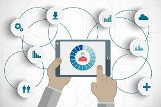

Gestion de la Tecnologia
COLEGIO MAYOR DEL CAUCA
Gestion de la tecnologia

a gestión de la tecnología se refiere a la planificación, desarrollo, implementación y control de tecnologías dentro de una organización o proyecto. Involucra la integración de recursos tecnológicos para optimizar procesos, aumentar la eficiencia y lograr objetivos estratégicos. Esta disciplina abarca desde la adquisición de tecnología hasta su mantenimiento y mejora, asegurando que las herramientas tecnológicas sean efectivas y alineadas con las necesidades del negocio o proyecto.
Historia
La historia de la gestión de la tecnología comenzó a desarrollarse con la Revolución Industrial en el siglo XVIII, cuando las innovaciones tecnológicas empezaron a transformar la producción y el trabajo. A medida que las fábricas crecían y las tecnologías mecánicas avanzaban, surgió la necesidad de gestionar eficientemente estos nuevos recursos.
En el siglo XX, con la llegada de la era de la información y la computación, la gestión de la tecnología se convirtió en una disciplina formal. Las empresas comenzaron a integrar tecnologías de la información (TI) en sus procesos, lo que dio lugar a la creación de departamentos especializados en TI y la figura del Chief Information Officer (CIO) para gestionar este ámbito estratégico.
Creacion hojas de ruta

Herramientas útiles para crear hojas de ruta:
Trello: Para la organización visual de tareas y metas.
Asana: Permite la creación de cronogramas y asignación de tareas.
Monday.com: Ofrece tableros para la planificación y ejecución.
Aha!: Especializada en la creación de hojas de ruta de productos.
Una hoja de ruta bien diseñada facilita el seguimiento del progreso, mejora la colaboración y garantiza que el equipo trabaje hacia objetivos comunes con una visión clara del futuro.
evolucón de la tecnologia
La evolución de la tecnología ha pasado por varias etapas clave:
Era Preindustrial: Herramientas simples para agricultura y construcción.
Revolución Industrial: Mecanización, máquinas de vapor, y producción en masa.
Era de la Electricidad y Comunicación: Invención del teléfono, radio y uso de electricidad.
Era de la Computación y Automatización: Desarrollo de computadoras, internet y automatización.
Era Digital: Expansión de dispositivos electrónicos, internet y redes sociales.
Era de la Inteligencia Artificial: Avances en IA, big data, IoT y tecnologías emergentes.
Cada etapa ha acelerado el progreso y transformado la vida diaria y los negocios.
Contenido de una Hoja de Ruta de Gestión Tecnológica

Beneficios de OPM
Claridad y simplicidad: La representación unificada de objetos y procesos facilita la comprensión tanto del diseño estructural como del comportamiento dinámico del sistema.
Escalabilidad: Permite gestionar sistemas grandes y complejos mediante la descomposición jerárquica y la representación en diferentes niveles de detalle.
Comunicabilidad: Su enfoque visual lo convierte en una excelente herramienta para la comunicación entre diferentes partes interesadas, desde ingenieros hasta directivos.
Aplicaciones
OPM se utiliza en diversos campos como la ingeniería de sistemas, el desarrollo de software, el análisis de negocios y la gestión de proyectos. Es especialmente útil en la representación de sistemas ciberfísicos, donde los componentes de hardware y software interactúan continuamente.
En resumen, la Metodología del Proceso de Objetos (OPM) ofrece un enfoque intuitivo y visual para modelar sistemas complejos, permitiendo integrar tanto los aspectos estructurales como los funcionales de manera coherente y comprensible.